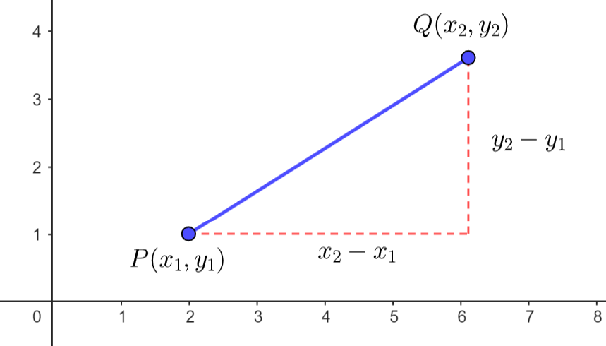
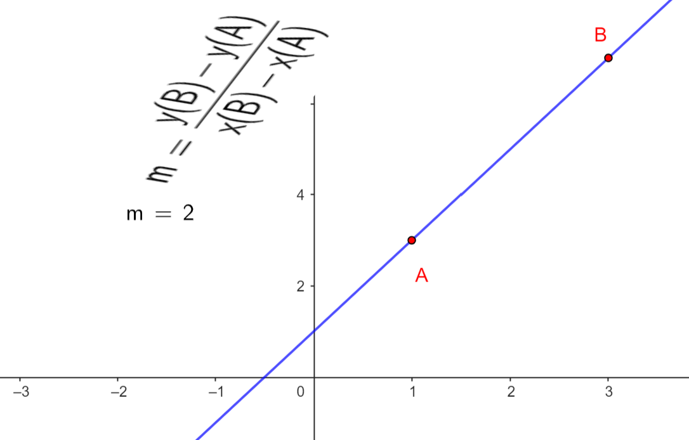
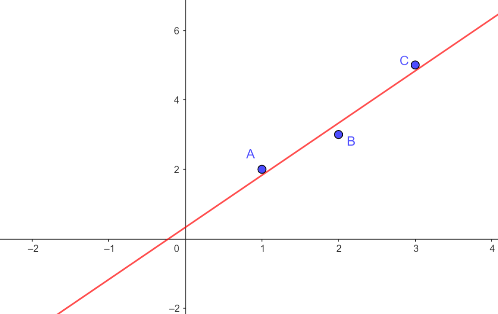
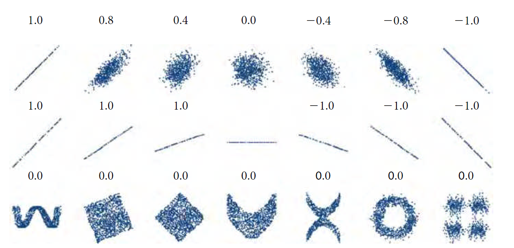
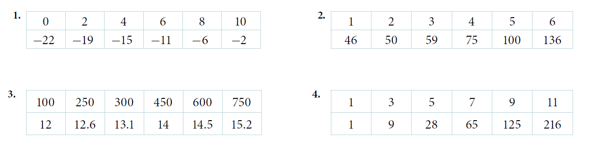

Topic 3. គម្រូលីនេអ៊ែរ (Linear Models):
Application of linear models
បង្រៀនដោយ
ហាំ ការីម
វត្ថុបំណង - Objectives:
- Determine the slope (មេគុណប្រាប់ទិស) of a given linear model and describe its meaning, in context.
- យកម៉ូដែលលីនេអ៊ែរដែលស្គាល់ដើម្បីដោះស្រាយចំណោទ (Use a given linear model to solve problems)
- បង្កើតម៉ូដែលលីនេអ៊ែរចេញពីទិន្នន័យដែលមាន (Create a linear model from data to solve problems)
Linear Models:
A linear model is a mathematical representation of a straight line,- ព័ណ៌នាទំនាក់ទំនងរវាងអថេរ២ ដែលកំណត់បានចំនួនថេរមួយ (used to describe a relationship between two variables where the change between them is constant)
- អាចឱ្យយើងព្យាករណ៍បានយោងលើគម្រូដែលបង្កើតរួច (allowing for predictions based on this consistent pattern)
- អនុវត្តន៍៖ វិភាគកំណើនសេដ្ឋកិច្ច (analyzing trends in economics), ព្យាករណ៍ពីលទ្ធផលហិរញ្ញវត្ថុ (forecasting financial performance), បង្កើនប្រសិទ្ធភាពរចនា (optimizing engineering designs), សិក្សាកត្តាសង្គម (studying social factors) និងសិក្សាអង្កេតផលប៉ះពាល់បរិស្ថាន ចំពោះវិស័យផ្សេងៗគ្នា ដូចជាវិទ្យាសាស្ត្រ អាជីវកម្ម និង វិទ្យាសាស្ត្រសង្គម (investigating environmental impacts across various fields like science, business, and social sciences) ។
Linear Models: representation
- When we say that $y$ is a linear function of $x$, we mean that the graph of the function is a line.
-
We are familiar with a linear model from learning the equation of a line :
\begin{equation}\label{eq:line}
Y=m X+b\tag{1}
\end{equation}
where $m$ is the slope of the line and $b$ is the $Y$-intercept.
- $y$ is the response variable (it responds to changes in $x$ )
- $x$ is the predictor variable.
- $m$ represents the estimated change in the response $y$ for a one-unit change in the predictor $x$
- $b$ is the value of the response $y$ when the predictor $x=0$
- Constant rate of change: The key feature of a linear model is that the relationship between variables changes at a constant rate, meaning the slope remains consistent.
Linear Models:
- It is useful to think of equation $(\ref{eq:line})$ as a function that maps values of $X$ to values of $Y$.
- Recall that points in the plane are denoted: $$ (x, y)=(\text {horizontal} \#, \text { vertical} \#) $$ Now, we have another way to look at what a point represents: $$ (x, y)=(\text {independent}, \text {dependent})=(\text {predictor}, \text {response}) $$

Determine the Slope and Interpret Its Meaning
In a linear equation \( y = mx + b \), calculate \( m \) using two points: \[ m = \frac{y_2 - y_1}{x_2 - x_1} \]

Example: For points \((2, 5)\) and \((4, 11)\),
\[
m = \frac{11 - 5}{4 - 2} = 3
\]
Interpretation: Relate \( m \) to the context: if \( y \) represents cost (in dollars) and \( x \) represents time (in hours), a slope of \( 3 \) means $3 added per hour.
Use a given linear model to solve problems:
-
Direct application: Plug in known values to solve for unknowns.
Example: For Temperature \(= 2t + 20 \) (where \( t \) = time in minutes):- Question: What’s the temperature at \( t = 10 \)? \[ y = 2(10) + 20 = 40^\circ C \]
- Question: When does the temperature reach \( 50^\circ C \)? \[ 50 = 2t + 20 \implies t = 15 \text{ minutes}. \]
Create a linear model from data:
-
For two points: Use the two-point formula.
Example: Given data \((1, 3)\) and \((3, 7)\):- Calculate slope \( m = \frac{7-3}{3-1} = 2 \).
- Use \( y = mx + b \) to find \( b \): \[ 3 = 2(1) + b \implies b = 1 \] Final model: \( y = 2x + 1 \)

Create a linear model from data:
-
ចំពោះទិន្នន័យមានច្រើន (multiple points) ម៉ូដែលលីនេអ៊ែរដែលកំណត់បានមានឈ្មោះថា (Best Fit Line: គេគណនាតាមរូបមន្តការេតូចបំផុត (least squares):
\[\boxed{\qquad
m = \frac{n\sum xy - \sum x \sum y}{n\sum x^2 - (\sum x)^2}, \quad b = \frac{\sum y - m\sum x}{n} \qquad
}
\]
Note: Please remember:
$-\;$\( n \): Number of data points, $-\;$ \( \sum x \): Sum of all \( x \)-values, $-\;$ \( \sum y \): Sum of all \( y \)-values, $-\;$ \( \sum xy \): Sum of \( x \times y \) for each pair and $-\;$ \( \sum x^2 \): Sum of squared \( x \)-values
So, the equation of the line is: \[ \hat{y} = mx + b \] where: \( \hat{y} \) = Predicted \( y \)-value, \( m \) = Slope (rate of change) and \( b \) = \( y \)-intercept (starting value).
- Compute sums: \( \sum x = 6 \), \( \sum y = 10 \), \( \sum xy = 23 \), \( \sum x^2 = 14 \), \( n = 3 \).
- Calculate slope and intercept: \[ m = \frac{3(23) - 6(10)}{3(14) - 6^2} = 1.5, \quad b = \frac{10 - 1.5(6)}{3} \approx 0.33 \]

Interpretation:
- The slope \( m = 1.5 \) indicates that for every unit increase in \( x \), \( y \) increases by $1.5$ units.
-
The $y$-intercept \( b = 0.33 \) signifies the estimated value of \( y \) when \( x \) is zero.
Practical considerations:
- ការបកស្រាយ: កត់ចំណាំថាមេគុណប្រាប់ទិសជា rate (e.g., "cost per unit") និង \( y \)-intercept ជាតម្លៃផ្ដើមដំបូង (initial value) (e.g., fixed cost).
- លក្ខខណ្ឌរបស់ម៉ូដែល (model limitations): ពិភាក្សាអំពីល្អៀងនៃការប៉ាន់ស្មាន (predictions outside the data range may be unreliable).
- Real-world context: Use examples like revenue vs. products sold, temperature vs. time, etc.
អនុវត្តន៍
ឧទាហរណ៍ ១. Theara saved $\$ 500$ from his summer job for spending money at college this fall. If he spends about $\$ 20$ per week, how long will his money last?- Since the rate of change is a constant $-20$ dollars per week, the model should be a line.
- The vertical intercept is how much he has at the beginning of the fall semester when zero weeks have passed: 500 . The linear model is $$ y=-20 x+500 $$
- Use the graph of the model to determine (a) when $\$ 300$ remains and also (b) how much money remains after $5$ weeks?
អនុវត្តន៍
ឧទាហរណ៍ ២. ឧបមាថាអ្នកបើកបរចេញពីទីរួមខេត្តកំពតឆ្ពោះទៅរាជធានីភ្នំពេញ ដើម្បីទៅមើលការប្រកួតបាល់ទាត់នៅស្តាដអូឡាំពិច។ នៅពេលអ្នកធ្វើដំណើរបានចម្ងាយ $30$ km ចេញពីទីរួមខេត្តមក អ្នកបានកំណត់ការធ្វើដំណើរដោយល្បឿន $65$ km/h សម្រាប់រយៈចម្ងាយដែលនៅសល់ ។ សមីការលីនេអ៊ែរ $D = 65 t + 30 $ តាងឱ្យចម្ងាយរបស់អ្នកពីទីរួមខេត្តកំពត ចំនួន $t$ ម៉ោង បន្ទាប់ពីអ្នកបានកំណត់ល្បឿនបើកបរ ។ ដូច្នេះ នៅពេល $ t = 0 $ ចម្ងាយរបស់អ្នកចរបាន $D = 30 $ ដែលត្រូវនឹងទីតាំងរបស់អ្នក នៅចម្ងាយ $30$ km ពីទីរួមខេត្ត ។- Describe what the slope means? $$ m=65 \mathrm{kph} \text { is positive } \; = \frac{\text { rise }}{\text { run }}=\frac{\text { change in } D \text { miles }}{\text { change in } t \text { hour }} $$
- How many hours after setting your cruise control will you be $80$ km from Kampot?
អនុវត្តន៍
ឧទាហរណ៍ ៣. An advertiser goes to a printer and is charged $\$ 47$ for $100$ copies of one flyer and $\$ 63$ for $259$ copies of another flyer. Let the predictor $n$ denote the number of copies and the response $C$ denote the cost. Identify points that represent the data.- Since the predictor is $n$ the number of copies and the response is $C$ the cost in dollars, the values $$ n=100, C=47 \quad \text { corresponds to the cost } \$ 47 \text { for } 100 \text { copies } $$
-
Points in the plane: $(x, y)=$ (predictor, response) $=(n, C)$, we have
$(100,47) \quad$ corresponds to $100$ copies with cost $\$ 47$
$(259,63)\quad$ corresponds to $259$ copies with cost $\$ 63$ - Determine a linear model for the data points $(100,47)$ and $(259,63)$.
Linear and Non-Linear Models?
From the given data set, we can find the មេគុណកូរ៉ឺឡាស្យុង (correlation coefficient), denoted as \( r \) ។ វាជា រង្វាស់ស្ថិតិមួយ ដែលបញ្ជាក់បាននូវទំហំទាក់ទង និងទិសដៅនៃទំនាក់ទំនងលីនេអ៊ែររវាងអថេរទាំងពីរ (statistical measure that quantifies the strength and direction of the linear relationship between two variables). វាមានតម្លៃនៅក្នុងចន្លោះ \(-1\) ទៅ \(1\) គឺ:- \( r = 1 \) indicates a perfect positive linear relationship,
- \( r = -1 \) indicates a perfect negative linear relationship,
- \( r = 0 \) indicates no linear relationship.

Linear and Non-Linear Models?
The correlation coefficient \( r \) is calculated using the following formula: \[ r = \frac{n \sum xy - \left(\sum x\right)\left(\sum y\right)}{\sqrt{\left[n \sum x^2 - (\sum x)^2\right]\left[n \sum y^2 - (\sum y)^2\right]}} \] where: \[ \begin{array}{ll} \bullet\; n = \text{number of data points,} & \bullet\; x = \text{ values of the first variable,}\\ \bullet\; y = \text{ values of the second variable,} & \bullet\; \sum xy = \text{ sum of the product of \( x \) and \( y \)}\\ \bullet\; \sum x = \text{ sum of \( x \)}, & \bullet\; \sum y = \text{ sum of \( y \),}\\ \bullet\; \sum x^2 = \text{ sum of squared \( x \),} & \bullet\; \sum y^2 = \text{ sum of squared \( y \)} \end{array} \] The correlation coefficient is a value, $r$, between $-1$ and $1$:- $r\gt 0$ suggests a positive (increasing) relationship
- $r\lt 0$ suggests a negative (decreasing) relationship
- The closer the value is to $0$, the more scattered the data.
- The closer the value is to $1$ or $-1$ , the less scattered the data is.
Linear and Non-Linear Models?
For the following exercises, draw a scatter plot for the data provided. Does the data appear to be linearly related?
